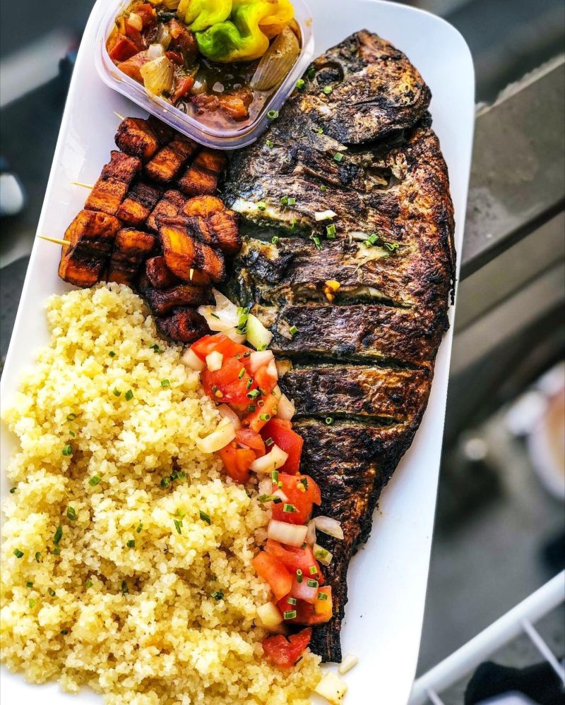

Attieke & Fish

Description
Attiéké poisson is a dish popular in Ivory Coast, consisting of attiéké (a couscous-like dish made from fermented cassava roots) served with grilled fish. It's a staple food, often enjoyed for breakfast, lunch, or dinner, and is a beloved part of Ivorian cuisine
\
Ingredients
- Attiéké
- Fish (Croaker Fish)
- Tomatoes
- Onions
- Bell Peppers
- Chili Peppers
- Cucumbers
- Vegetable Oil
- Salt
- Maggi
Steps
- Prepare the fish by cleaning and seasoning it with salt, Maggi, and spices.
- Grill the fish until cooked through.
- In a ziplog bag, add the Attieke and sprinkle it with water to you liking (it will make it moist)
- Microwave the Attieke for about 5 to 6 minutes
- Serve the grilled fish on a bed of attiéké, garnished with sliced tomatoes, onions, bell peppers, and cucumbers.
- Enjoy your delicious attiéké poisson!
Optional
Some people like to add a sauce made from tomatoes, onions, and chili peppers to enhance the flavor of the dish.